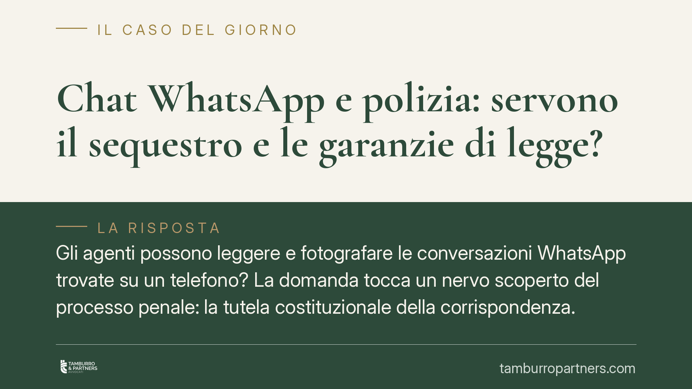

Chat WhatsApp e polizia: servono il sequestro e le garanzie di legge?
Gli agenti possono leggere e fotografare le conversazioni WhatsApp trovate su un telefono? La domanda tocca un nervo scoperto del processo penale: la tutela costituzionale della corrispondenza. Una recente linea giurisprudenziale ribadisce che l'acquisizione senza le dovute garanzie rende la prova inutilizzabile. Ma la materia è in evoluzione e le distinzioni contano più delle formule.

Il punto di partenza
Lo scenario è frequente. Durante un controllo o una perquisizione la polizia giudiziaria accede allo smartphone di una persona e fotografa le chat di WhatsApp, acquisendone gli screenshot. Quelle immagini finiscono poi tra gli atti d'indagine. La domanda è semplice: quella prova è valida?
La risposta non è univoca e dipende da come, da chi e con quali garanzie l'acquisizione è avvenuta. Una pronuncia della Corte di Cassazione, che riferiamo come orientamento recente in attesa di verifica degli estremi definitivi (il riferimento alla sentenza n. 6171/2026 va trattato come da confermare), ha richiamato un principio consolidato: i messaggi scambiati via app di messaggistica rientrano nella nozione di corrispondenza tutelata dall'art. 15 della Costituzione.
Il fondamento costituzionale
L'art. 15 Cost. garantisce la libertà e la segretezza della corrispondenza e di ogni altra forma di comunicazione. La loro limitazione può avvenire soltanto per atto motivato dell'autorità giudiziaria e con le garanzie stabilite dalla legge.
Questo è il cuore della questione. Un messaggio WhatsApp non è un oggetto qualsiasi: è comunicazione protetta. Acquisirlo non è come fotografare una scena. Richiede il rispetto di una procedura, perché incide su un diritto fondamentale.
La distinzione che fa la differenza
Qui occorre precisione, perché la materia è oggetto di un dibattito tutt'altro che chiuso. La giurisprudenza, comprese le Sezioni Unite in tema di dati digitali, distingue due situazioni diverse.
Da un lato i messaggi in transito o comunque ancora assimilabili a un flusso comunicativo: qui la tutela dell'art. 15 Cost. è piena e l'acquisizione segue le regole della corrispondenza.
Dall'altro i messaggi già ricevuti, letti e archiviati sul dispositivo. Una parte della giurisprudenza li ha avvicinati alla nozione di documento informatico (art. 234 c.p.p.), con un regime diverso. Il punto è controverso e non va presentato come principio assoluto. Semplificare questa distinzione significa dare per risolto ciò che risolto non è.
Il quadro normativo aggiornato
Sul versante del sequestro, il riferimento classico è l'art. 254 c.p.p., che disciplina il sequestro di corrispondenza presso chi fornisce servizi postali o telematici. Dire però che l'unica base necessaria sia il decreto del pubblico ministero è oggi impreciso.
Gli interventi normativi più recenti in materia di sequestro di corrispondenza e di dispositivi elettronici (tra cui la L. 90/2024 e le disposizioni collegate) hanno reso il quadro più articolato, introducendo in alcuni casi una riserva di giurisdizione, cioè il coinvolgimento del giudice e non del solo PM. Chi valuta la validità di un'acquisizione deve quindi verificare il regime applicabile al caso concreto, non fermarsi a una regola unica.
Cosa significa "inutilizzabile"
Quando la prova è raccolta in violazione di un divieto di legge, scatta l'inutilizzabilità prevista dall'art. 191 c.p.p. Attenzione a non confonderla con l'assenza materiale dell'atto dal fascicolo: l'atto può restarvi fisicamente, ma il giudice non può porlo a fondamento della decisione. L'inutilizzabilità, inoltre, è rilevabile anche d'ufficio in ogni stato e grado del procedimento.
Il profilo tecnico: genuinità e catena di custodia
C'è un secondo fronte, spesso trascurato. Lo screenshot è per sua natura manipolabile. Un'immagine può essere ritagliata, decontestualizzata o alterata. Per questo conta la catena di custodia del dato: come è stato estratto, con quali strumenti, se ne è garantita l'integrità e la provenienza.
Una prova digitale priva di adeguate garanzie di genuinità è attaccabile anche sul piano della sua affidabilità, oltre che su quello procedurale. I due profili vanno affrontati insieme.
Cosa fare in concreto
- Verificate il titolo dell'acquisizione: controllate se esisteva un provvedimento dell'autorità giudiziaria e se era quello richiesto dal regime applicabile al caso.
- Qualificate il tipo di messaggio: distinguete tra comunicazioni in transito e messaggi già archiviati sul dispositivo, perché il regime cambia.
- Esaminate la catena di custodia: chiedete come è stato estratto il dato e con quali strumenti, verificando l'integrità del contenuto.
- Eccepite tempestivamente l'inutilizzabilità ai sensi dell'art. 191 c.p.p., motivando la violazione specifica.
- Documentate ogni anomalia tecnica dello screenshot, utile sia sul piano procedurale sia su quello della genuinità.
Il profilo procedurale della prova digitale incide spesso sull'esito più del merito. Vale la pena presidiarlo con attenzione fin dall'inizio.
Disclaimer
Contributo informativo a cura di Tamburro & Partners - Avv. Giuseppe Tamburro. Non costituisce parere legale.
Ogni condominio ha una storia a sé.
Se gestisci un'amministrazione e vuoi un confronto su una specifica questione condominiale, scrivi allo studio. Ti rispondiamo entro un giorno lavorativo.